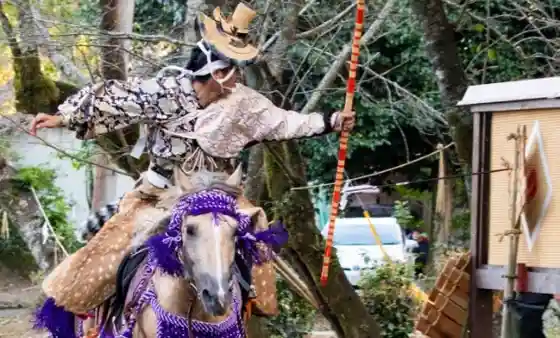
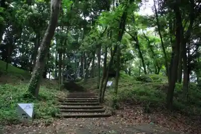
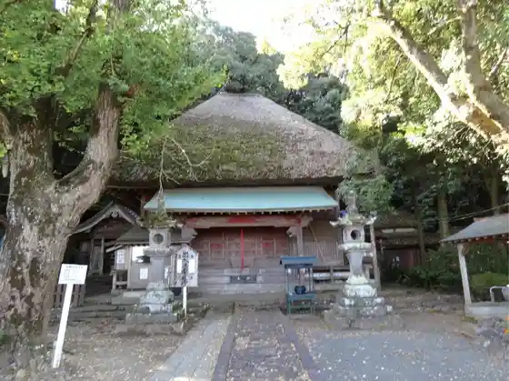
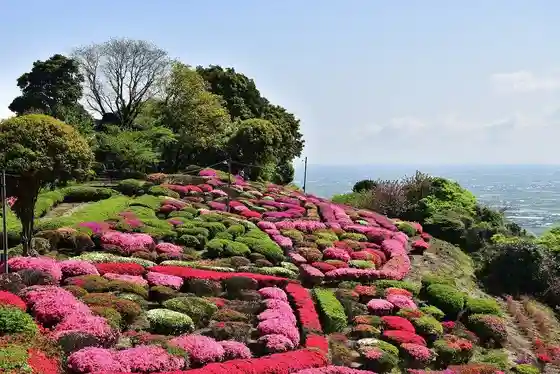

Tsuma Yama Shrine
Shiroishi, Saga · 0952-84-7123 · Official / source link

Ryuo Saki Kokon no Mori Park
Shiroishi, Saga · 0952-84-7129 · Official / source link

Yasufuku Tera (Mizu Do San)
Shiroishi, Saga · 0952-84-7123 · Official / source link

Utagaki Park
Shiroishi, Saga · 0952-84-7123 · Official / source link

Ho no Ike
Shiroishi, Saga · 0952-84-7123 · Official / source link
Suko Castle Ruins
Shiroishi, Saga · 0952-84-7129 · Official / source link
Fukudomi Mai Land Park
Shiroishi, Saga · 0952-87-2149 · Official / source link
Roadside Station Shiroishi
Shiroishi, Saga · 0952-87-2116 · Official / source link
Shiroishi Town Tourism Association
Shiroishi, Saga · 0952-20-5330 · Official / source link
Hosen Tera
Shiroishi, Saga · 0952-84-7123 · Official / source link
Shu Hayashiji (Neko Tsuka)
Shiroishi, Saga · 0952-84-7123 · Official / source link
Kishikawa Noen Ichigo no Eki
Shiroishi, Saga · 090-4991-1583 · Official / source link
Shiroishi Tokusambutsu Chokubai Tokoro
Shiroishi, Saga · 0952-84-7050 · Official / source link
Shiroishi Heiya no Banri no Chojo
Shiroishi, Saga · 0952-84-7123 · Official / source link
Sakura no Sato Lookout
Shiroishi, Saga · 0952-84-7123 · Official / source link
Viewpoint Tokoro (Hizen Inuyamajo)
Shiroishi, Saga · 0952-84-7123 · Official / source link
Inasa Shrine
Shiroishi, Saga · 0954-65-2177 · Official / source link
Ariake Sukai Park Fureai Sato
Shiroishi, Saga · 0954-65-3366 · Official / source link